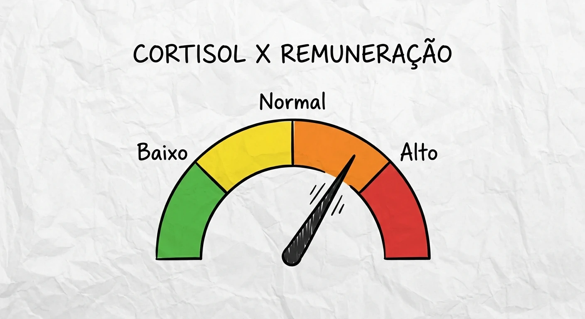
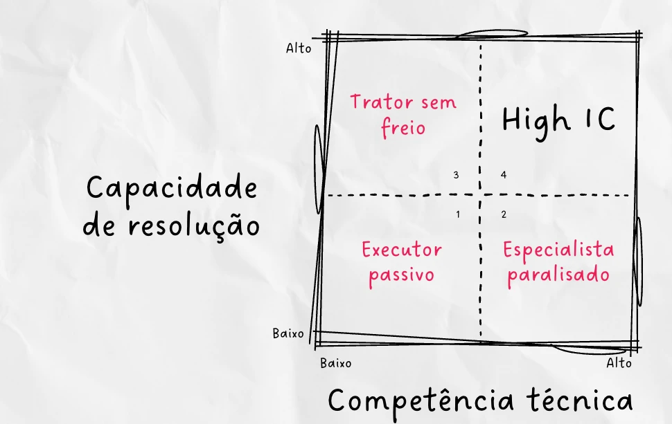
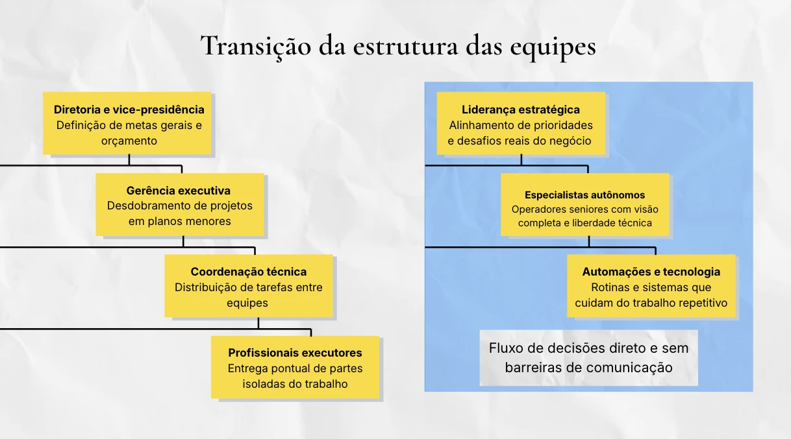
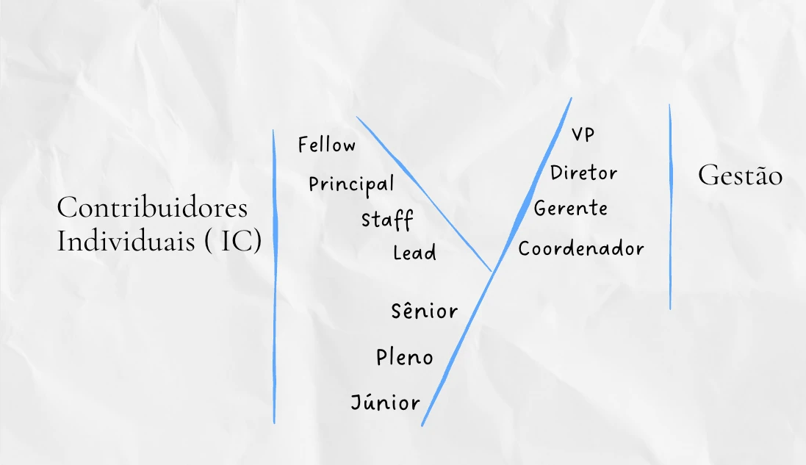

Tempo de leitura: 7 minutos. Autor: Hugo S. Nascimento.
Nota editorial: Este artigo foi originalmente publicado na primeira edição da newsletter [Agentes] x [a Gente] no LinkedIn por Hugo S. Nascimento. Esta versão expandida consolida as implicações econômicas e operacionais para a estrutura corporativa.
Em 2016, eu morava em Brasília e tinha acabado de levantar investimento para a minha segunda startup, a WeCare. Estava no meio da montagem do time para tracionar o produto depois do MVP quando sentei para conversar com um gerente de TI experiente.
Perguntei como ele pensava a composição da equipe, e a resposta veio rapidamente:
"Não chame agora nem estagiário nem júnior, no começo eles só tomam tempo. Demoram meses para pegar o ritmo, consomem o dia inteiro do sênior para especificar tarefa, tirar dúvidas e revisar código, e no fim entregam mais devagar do que se o próprio sênior fizesse sozinho."
Naquela época, a conta não fechava de outro jeito. O sênior podia produzir muito mais, mas tinha o limite físico de duas mãos e oito horas no dia. Para dar conta do volume, a empresa precisava contratar estagiários e analistas em grande escala, colocando coordenadores e gerentes por cima só para organizar a fila, distribuir demandas e cobrar prazos.
Durante anos, o mercado acreditou que essa dor existia apenas na tecnologia. Hoje quase toda área corporativa roda em cima de software e dados. Recursos humanos, controladoria, finanças e departamento jurídico sofrem exatamente do mesmo gargalo para coordenar pessoas.
A diferença é que a inteligência artificial eliminou esse limite de execução individual do profissional sênior. Essa mudança começou a reestruturar o organograma das empresas.
O Multiplicador Agêntico
A pergunta que resume essa virada de chave é direta: ainda faz sentido medir produtividade pelo tamanho da equipe?
O tema ainda é pouco debatido no Brasil, mas no mercado norte-americano o chamado High IC já é realidade consolidada. Ele não é um analista cumprindo tarefas manuais e nem deseja gerenciar pessoas, mas passa a receber o mesmo patamar salarial de uma diretoria executiva.
Essa equação econômica só fecha pela presença de agentes autônomos operando na rotina interna da companhia.

Na prática, o fluxo operacional é direto. O sênior trabalha acompanhado de agentes conectados aos sistemas corporativos durante todo o expediente. Com isso, ele não precisa fatiar trabalho básico para repassar a profissionais iniciantes. Sem esse repasse constante, o tempo gasto em reuniões de alinhamento despenca. O especialista ganha autonomia para resolver o problema na ponta e entrega volume superior sem demandar equipe subordinada.
Remuneração Sem Desgaste
Durante décadas, para obter evolução salarial expressiva em uma organização tradicional, o único caminho viável era assumir posições de chefia.
Quem possuía excelência técnica atingia rapidamente o teto da carreira. Para subir na hierarquia, a empresa promovia o melhor tributarista, o melhor especialista em folha de pagamento ou o melhor modelador financeiro para aprovar férias, preencher planilhas orçamentárias e apagar incêndios em comitês diários.
Esse avanço salarial vinha acompanhado de uma sobrecarga contínua de estresse e reuniões políticas.

A lógica corporativa estabelecia que salários elevados exigiam absorver atritos interpessoais, gerenciar conflitos internos e negociar com fornecedores.
Com a consolidação dos agentes corporativos, essa amarração estrutural foi desfeita. Organizações de ponta já remuneram especialistas técnicos no nível de diretores estatutários para conduzir entregas pesadas com agentes de IA, preservando o equilíbrio operacional. A promoção para gestão de pessoas deixa de ser obrigatória para alcançar crescimento patrimonial. A empresa passa a remunerar pela capacidade de solucionar problemas complexos, e não pelo volume de ruído administrativo suportado.
Perfil do High IC
O conceito surgiu no polo de tecnologia dos Estados Unidos, onde a sigla IC designa o Individual Contributor, o especialista que entrega resultados práticos pela própria execução sem liderar equipes. O mercado também adota termos equivalentes como High-Impact IC, HI-IC ou HI-C, popularizados por lideranças de produto como Elena Verna da Lovable.
Historicamente, o profissional que superava os 35 anos de idade sem assumir cargos de gestão era visto com reservas pelo mercado tradicional, sob a premissa de falta de ambição corporativa. A palavra High transformou totalmente essa dinâmica.
O High IC não é o colaborador que recorre a assistentes de texto genéricos para redigir e-mails. Ele é o especialista sênior que domina as regras de negócio, entende a arquitetura de dados e comanda agentes para concluir fluxos completos de ponta a ponta.

Fora da engenharia de software, a maioria das empresas divide o quadro entre profissionais passivos aguardando comandos, especialistas críticos que travam na burocracia sem implementar saídas e colaboradores com alta iniciativa que executam sem critério e provocam retrabalho severo.
O High IC une domínio de domínio a uma postura de alta resolução. Ele mapeia a dor do negócio, aciona os agentes para executar a carga operacional pesada e entrega a solução funcional sem travar em filas departamentais.
Essa realidade conecta-se diretamente à tese de Founder Mode apresentada por Paul Graham em 2024. A empresa perde velocidade quando adiciona camadas de gerência intermediária entre quem toma decisões e quem constrói. O High IC resolve esse gargalo, sentando com o conselho ou diretoria para entender a prioridade estratégica e executando na ponta sem intermediários.
A Conta do Mercado
Os diretores financeiros já calculam o impacto dessas estruturas nas demonstrações de resultado: ainda faz sentido manter folhas massivas de pagamento no formato convencional, ou priorizar núcleos enxutos com alta densidade de agentes?
Os dados compilados pela plataforma Levels.fyi confirmam essa virada no mercado global. Um High IC recebe hoje entre 35 e 55 por cento a mais do que um sênior tradicional. Quando esse especialista comprova proficiência na orquestração de agentes de IA, essa remuneração salta adicionais 19 por cento.
Na comparação com as posições de gerência imediata, o High IC nos escalões superiores não apenas iguala os vencimentos, mas chega a superar a remuneração de gestores tradicionais de equipe entre 5 e 15 por cento. O mercado financeiro começou a valorizar a capacidade de resolução mais do que a gestão formal de cronogramas.
[Agentes] x [a Gente] — Fora do hype, discutimos como a engenharia agêntica multiplica e alavanca a capacidade laboral humana. Análises quinzenais publicadas na newsletter de Hugo S. Nascimento no LinkedIn com mais de 1.600 assinantes. Acompanhar no LinkedIn ↗
O Custo de Alinhamento
A maior despesa em qualquer iniciativa empresarial raramente está nas licenças de software ou nos equipamentos. O custo real reside na lentidão de alinhamento entre times extensos.
Em uma estrutura tradicional com cinco camadas hierárquicas, a diretoria estipula o direcionamento, a gerência desdobra em planos, a coordenação reparte as tarefas e os analistas executam. A cada nível de repasse, frações do contexto original se perdem e as decisões atrasam.

Essa foi a justificativa central de Jensen Huang em 2024 ao manter mais de cinquenta executivos reportando diretamente a ele na Nvidia. Ele recusa filtros intermediários de gestão porque reconhece que cada escalão adicional atua como uma barreira que distorce dados e retarda respostas de mercado.
Em uma equipe enxuta alavancada por agentes, o especialista comunica-se diretamente com os tomadores de decisão e direciona a carga repetitiva aos sistemas autônomos. A comunicação permanece limpa e as entregas acontecem sem interferências burocráticas.
Carreira em Y Transversal
No setor de tecnologia, o modelo de Carreira em Y consolidou-se para permitir que arquitetos seniores recebessem remuneração compatível com a diretoria sem a obrigação de chefiar equipes.

John Collison, cofundador da Stripe, denomina esse perfil de dupla especialização. O profissional mais valorizado no mercado contemporâneo não é o programador puro, mas o especialista em áreas de negócio que domina rotinas tributárias, contratos complexos ou políticas de remuneração e opera agentes autônomos com fluência técnica. Ele modela o fluxo e entrega a demanda resolvida, sem abrir chamados de TI ou aguardar priorização em backlogs alheios.
Esse movimento ganha tração nas principais áreas corporativas:
- No Jurídico: O tributarista sênior emprega agentes para auditar centenas de contratos em minutos e despacha teses diretamente com a diretoria jurídica, com remuneração de sócio sem necessidade de supervisionar advogados juniores.
- Em Finanças: O especialista em modelagem conecta agentes para conciliar o fluxo de caixa diário e assessora diretamente o CFO sobre liquidez e risco de capital, sem a necessidade de um exército de analistas conferindo extratos bancários.
- No RH: O líder de remuneração desenvolve fluxos automatizados com agentes para atualizar estruturas de cargos e salários, dispensando tarefas de digitação e operando como consultor direto da presidência.
A obrigatoriedade de virar gestor para conquistar valorização financeira deixou de existir. A métrica de valor passou a ser o tamanho do problema solucionado.
Vencedores e Perdedores
Essa transição reconfigura o equilíbrio de forças nas corporações:
Para o especialista técnico que sempre preferiu a execução de excelência à gestão de pessoas, abre-se o momento mais favorável das últimas décadas para valorização profissional e financeira.
Para a média gerência dedicada exclusivamente a consolidar relatórios, cobrar status no Slack e montar apresentações corporativas, o modelo tradicional entrou em rápida obsolescência.
Para quem busca posições iniciais de carreira, o nível de exigência aumentou substancialmente. Posições de estágio focadas em conferência manual e tarefas burocráticas foram absorvidas por agentes operando em segundos. Novos ingressantes precisarão demonstrar capacidade analítica e autonomia técnica desde o início da jornada profissional.
Questões em Aberto
A transformação das estruturas corporativas por agentes de inteligência artificial avança em ritmo acelerado e levanta reflexões estratégicas que exigem acompanhamento do mercado:
- Apropriação de Margens: O salto de produtividade será repassado para a remuneração dos especialistas ou retido integralmente no caixa das companhias?
- Dinâmica de Convivência: Como as empresas equilibrarão múltiplos High ICs de alto calibre na mesma vertical sem gerar atritos de vaidade e disputa por influência?
- Impacto em Backoffice: A redução de custos na folha de pagamento atingirá primeiro quais departamentos de apoio no cenário corporativo brasileiro?
- Formação de Sucessores: Com a automação das rotinas operacionais básicas, quais métodos as empresas adotarão para formar os próximos líderes seniores?
Acompanhe as análises continuadas sobre a transformação do trabalho e sistemas autônomos assinando a newsletter [Agentes] x [a Gente] no LinkedIn, com publicações regulares de Hugo S. Nascimento.
Artigos Relacionados
- A Matriz de Substituição de BPO: Métricas Operacionais e Financeiras
- Playbook C-Suite: Proteção de Margem e Redução de Custos com Software Agêntico
- CRM de Vendas B2B: Comprar Salesforce, Adaptar Twenty ou Construir com Agentes
- O Mercado de RPA Está em Colapso
- Por Que Criei a hsnlabs
- Conhecer o Agentic Bootcamp™ da hsnlabs
Artigo publicado originalmente em hsnlabs. Autor: Hugo S. Nascimento.